Co oferujemy?
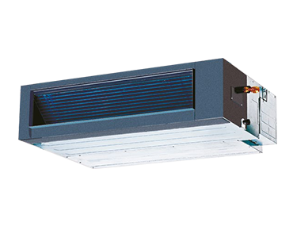
Instalowane są najczęściej między sufitem a stropem, dzięki czemu są niewidoczne. Zastosowanie tego typu urządzeń pozwala na równomierne rozprowadzenie powietrza do kilku pomieszczeń jednocześnie. Stosowane są głównie w biurach, salach konferencyjnych oraz restauracjach.
Klimatyzatory kanałowe
Instalowane są najczęściej między sufitem a stropem, dzięki czemu są niewidoczne. Zastosowanie tego typu urządzeń pozwala na równomierne rozprowadzenie powietrza do kilku pomieszczeń jednocześnie. Stosowane są głównie w biurach, salach konferencyjnych oraz restauracjach.
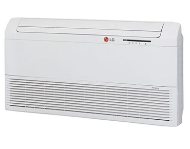
Montowane są w pomieszczeniach wymagających dalekiego zasięgu strumienia powietrza, charakteryzują się płaską budową i możliwością montażu w poziomie lub pionie. Wykorzystywane w centrach handlowych oraz wielkopowierzchniowych sklepach.
Klimatyzatory podsufitowe
Montowane są w pomieszczeniach wymagających dalekiego zasięgu strumienia powietrza, charakteryzują się płaską budową i możliwością montażu w poziomie lub pionie. Wykorzystywane w centrach handlowych oraz wielkopowierzchniowych sklepach.
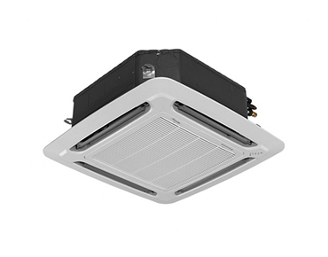
Przeznaczone do instalacji w sufitach podwieszanych. Wyróżnia je czterokierunkowy strumień wydmuchiwanego powietrza oraz nowoczesny wygląd. Najczęściej stosowane są w biurowcach, restauracjach, hotelach oraz salach konferencyjnych.
Klimatyzatory kasetonowe
Przeznaczone do instalacji w sufitach podwieszanych. Wyróżnia je czterokierunkowy strumień wydmuchiwanego powietrza oraz nowoczesny wygląd. Najczęściej stosowane są w biurowcach, restauracjach, hotelach oraz salach konferencyjnych.
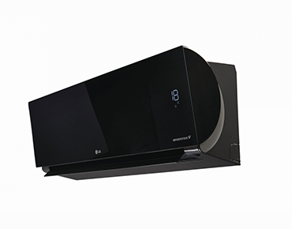
Najpopularniejsze na rynku modele klimatyzatorów. Ich zastosowanie jest wszechstronne, mogą być wykorzystywane zarówno w biurach, gabinetach, sklepach jak i w mieszkaniach. Klimatyzatory tego typu często posiadają bardzo nowoczesny i elegancki wygląd.
Klimatyzatory ścienne (split)
Najpopularniejsze na rynku modele klimatyzatorów. Ich zastosowanie jest wszechstronne, mogą być wykorzystywane zarówno w biurach, gabinetach, sklepach jak i w mieszkaniach. Klimatyzatory tego typu często posiadają bardzo nowoczesny i elegancki wygląd.
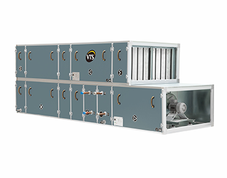
Jest to rodzaj centrali wentylacyjnej wyposażonej w wymiennik odzysku ciepła. Dzięki zastosowaniu takiego rozwiązania mamy możliwość odzyskania części energii potrzebnej do ogrzania powietrza nawiewanego do pomieszczeń.
Centrale rekuperacyjne
Jest to rodzaj centrali wentylacyjnej wyposażonej w wymiennik odzysku ciepła. Dzięki zastosowaniu takiego rozwiązania mamy możliwość odzyskania części energii potrzebnej do ogrzania powietrza nawiewanego do pomieszczeń.
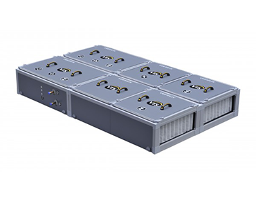
Jest to urządzenie stosowane w wentylacji mechanicznej, dzięki któremu powietrze nawiewane z zewnątrz jest filtrowane, obrabiane termicznie (podgrzewane lub schładzane), a następnie nawiewane do pomieszczeń. Instalowane zarówno w budynkach mieszkalnych jak i przemysłowych.
Centrale wentylacyjne
Jest to urządzenie stosowane w wentylacji mechanicznej, dzięki któremu powietrze nawiewane z zewnątrz jest filtrowane, obrabiane termicznie (podgrzewane lub schładzane), a następnie nawiewane do pomieszczeń. Instalowane zarówno w budynkach mieszkalnych jak i przemysłowych.
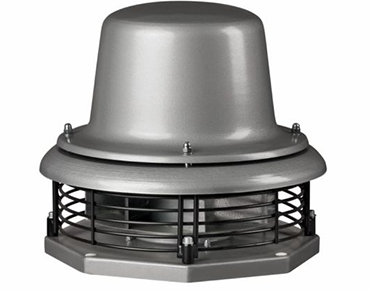
Montowane na dachach budynków, służą do wyciągania zużytego powietrza. Charakteryzuje je odporność na zmienne warunki atmosferyczne. Wykorzystywane między innymi w obiektach przemysłowych oraz lokalach gastronomicznych.
Wentylatory dachowe
Montowane na dachach budynków, służą do wyciągania zużytego powietrza. Charakteryzuje je odporność na zmienne warunki atmosferyczne. Wykorzystywane między innymi w obiektach przemysłowych oraz lokalach gastronomicznych.
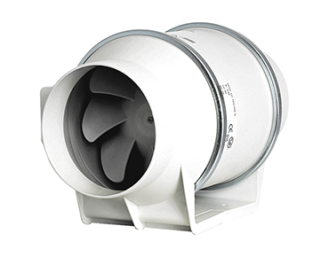
Stosowane w ciągu kanałów wentylacyjnych jako element systemu wentylacji mechanicznej. Mogą służyć jako urządzenia nawiewne lub wywiewne.
Wentylatory kanałowe
Stosowane w ciągu kanałów wentylacyjnych jako element systemu wentylacji mechanicznej. Mogą służyć jako urządzenia nawiewne lub wywiewne.
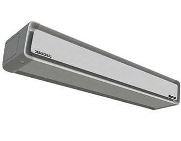
Znajdują zastosowanie w miejscach, wymagających oddzielenia stref o różnych temperaturach. Pozwalają uniknąć mieszania powietrza ciepłego z zimnym. Najczęściej instalowane w sklepach, bankach oraz centrach handlowych.
Kurtyny powietrzne
Znajdują zastosowanie w miejscach, wymagających oddzielenia stref o różnych temperaturach. Pozwalają uniknąć mieszania powietrza ciepłego z zimnym. Najczęściej instalowane w sklepach, bankach oraz centrach handlowych.
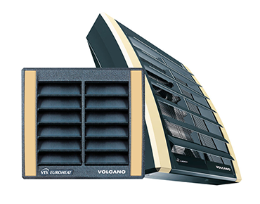
Urządzenia do ogrzewania pomieszczeń. Stosowane w obiektach o średniej i dużej kubaturze takich jak: magazyny, hale, warsztaty, sklepy wielkopowierzchniowe. Zaletą nagrzewnic wodnych jest krótki czas nagrzewania powietrza w pomieszczeniach.
Nagrzewnice wodne
Urządzenia do ogrzewania pomieszczeń. Stosowane w obiektach o średniej i dużej kubaturze takich jak: magazyny, hale, warsztaty, sklepy wielkopowierzchniowe. Zaletą nagrzewnic wodnych jest krótki czas nagrzewania powietrza w pomieszczeniach.
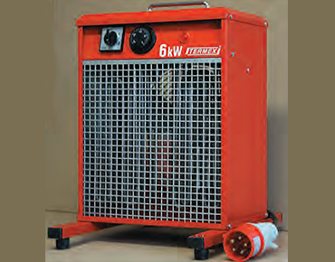
Mają zastosowanie w ogrzewaniu pomieszczeń o średniej i małej kubaturze. Ich zaletą jest możliwość szybkiego montażu i duża skuteczność.
Nagrzewnice elektryczne
Mają zastosowanie w ogrzewaniu pomieszczeń o średniej i małej kubaturze. Ich zaletą jest możliwość szybkiego montażu i duża skuteczność.